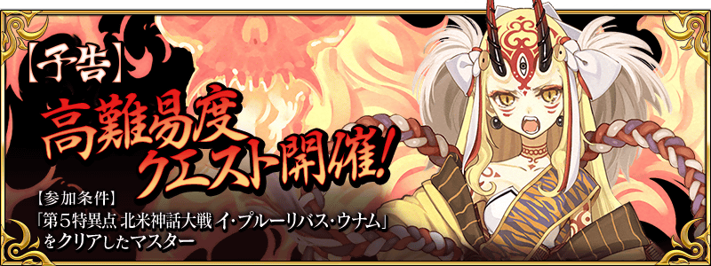
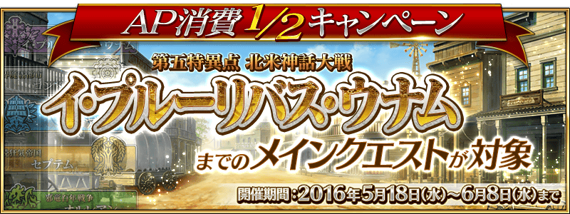

◆活動舉辦預告◆
預定近日舉辦的活動，是以上級者作為對象的高難易度活動。
為此，參加條件為僅有通過「第五特異點 合眾為一」的Master才能參加。

◆主線關卡AP消費1/2◆
為了活動，舉辦到合眾為一為止的主線關卡AP消費1/2宣傳活動。
無論如何藉此機會推進主線關卡吧！
◆主線關卡AP消費1/2期間◆
2016年5月18日(三)16:00～6月8日(三)12:59
◆對象關卡◆
冬木、奧爾良、Septem、歐開諾斯、倫敦、合眾為一內全部的主線關卡
※冬木、奧爾良、Septem、歐開諾斯、倫敦、合眾為一内的Free關卡、幕間物語為對象外
直到活動舉辦為止的現在還請稍加等待。